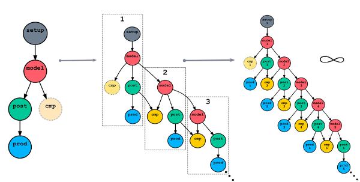

Scheduling Algorithm§
See also
Migration Guide:
User Guide:
Cylc can manage infinite workflows of repeating tasks:
Cylc 8 has a new scheduling algorithm that:
- Is much more efficient because it only has to manage active tasks
- waiting tasks are not pre-spawned before they are needed
- succeeded tasks are not kept across the active task window
- no costly indiscriminate dependency matching is done
- Distinguishes between optional and
required task outputs, to support:
- graph branching without suicide triggers
- correct diagnosis of workflow completion
- Causes no implicit dependence on previous-instance job submit
- instances of same task can run out of cycle point order
- the workflow will not unnecessarily stall downstream of failed tasks
- Provides a sensible active-task based window on the evolving workflow
- (to fully understand which tasks appeared in the Cylc 7 GUI you had to understand the scheduling algorithm)
- Supports multiple concurrent flows within the same workflow.
- Can start a workflow from any task or tasks in the graph (no need for checkpoint restart)
- Can limit activity within as well as across cycles, without risking a stall